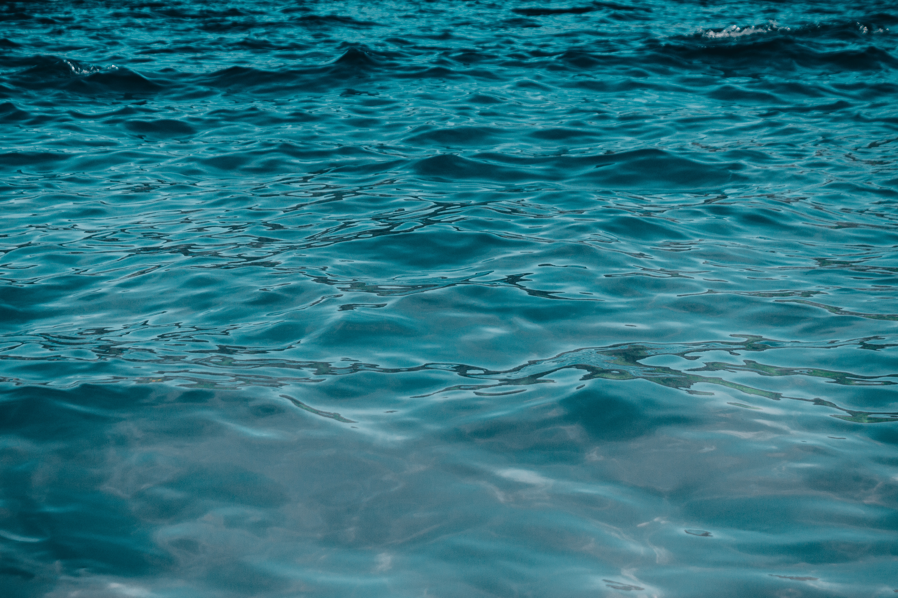

Selamat datang di NOTO. Didirikan di jantung kota Bandung pada tahun 1995, kami telah mendedikasikan lebih dari dua dekade untuk menyempurnakan rekayasa pengolahan air bersih. Dengan lebih dari 800 pelanggan terpuaskan hingga saat ini, reputasi kami dibangun kokoh di atas fondasi kepercayaan, efisiensi kerja, dan kualitas layanan tanpa kompromi.
Semua berawal dari visi sederhana: menghadirkan solusi air yang bersih, aman, dan berkelanjutan bagi masyarakat. Seiring berjalannya waktu, dedikasi kami membawa NOTO bertumbuh dari operasi lokal menjadi salah satu nama paling terpercaya di industri pengolahan air (*water filtration & wastewater treatment*).

Setiap lekukan dan warna dalam identitas kami mencerminkan prinsip integritas teknis yang kami pegang teguh.
Kejelasan & Transparansi
Desain lugas huruf 'N' di dalam lingkaran oval menandakan komitmen kami terhadap transparansi. Kami memberikan solusi yang jelas dan terbukti secara teknis untuk kebutuhan pengolahan air yang rumit, memastikan klien memahami proses, sains, dan manfaat nyata dari teknologi kami.
Siklus Utuh & Integritas
Bentuk oval solid yang membingkai huruf 'N' adalah simbol integritas dan siklus layanan menyeluruh yang kami sediakan. Kami berkomitmen pada praktik etis di setiap aspek bisnis: mulai dari survei awal, desain rekayasa, pemasangan presisi, hingga layanan pemeliharaan berkala seumur hidup.
Inovasi Berkelanjutan
Garis-garis dinamis di dalam huruf 'N' merepresentasikan aliran air dan ide-ide baru yang tak pernah berhenti. Kami senantiasa berada di garis terdepan teknologi purifikasi air, terus mencari metode inovatif untuk meningkatkan kualitas, higienitas, dan efisiensi energi.
Setiap warna merefleksikan nilai emosional dan dedikasi profesional dalam melayani masyarakat.
Warna biru gelap mencerminkan profesionalisme tinggi, wawasan mendalam, dan otoritas ilmiah dalam rekayasa sistem air.
Warna laut dan langit yang memberikan rasa stabil, andal, dan menenangkan. Menegaskan bahwa klien dapat selalu mengandalkan kami.
Aksen biru cerah yang futuristis, menyimbolkan teknologi mutakhir (*cutting-edge technology*) dan keterbukaan terhadap kemajuan.
Warna es dan air jernih kristal, melambangkan kemurnian hakiki (*drink pure, live well*) yang kami hadirkan di setiap tetes air.
Memulai operasional di Bandung dengan fokus pada perakitan filter air sumur bor rumah tangga dan depot air minum isi ulang.
Mengembangkan kapasitas fabrikasi Water Treatment Plant (WTP) untuk pabrik tekstil, hotel berbintang, dan fasilitas rumah sakit di Jawa Barat.
Mengintegrasikan membran Reverse Osmosis (RO) berskala industri dan sistem pengolahan limbah cair (WWTP) sesuai regulasi baku mutu lingkungan nasional.
Terus bertransformasi dengan otomasi PLC, instrumentasi digital, dan komitmen layanan purna jual menyeluruh bagi ratusan mitra di seluruh Indonesia.
Konsultasikan kendala air Anda bersama insinyur dan teknisi berpengalaman kami di Bandung.